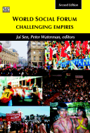
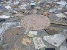
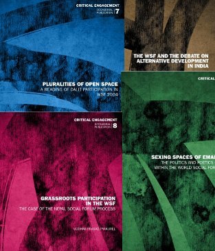
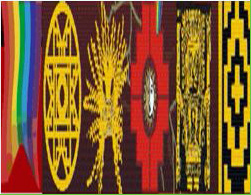
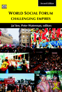
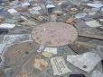
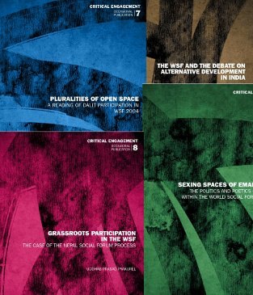
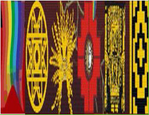
ABOUT US
CACIM (the India Institute for Critical Action – Centre in Movement) is an initiative towards cultivating and nurturing a culture of critical reflexivity and action in individual and public work. In principle we expect to work in many fields, but our focus at the moment........
MORE
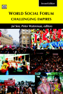
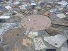
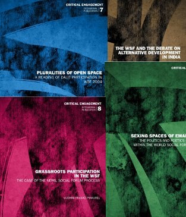
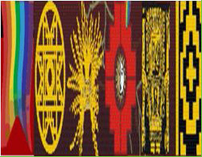